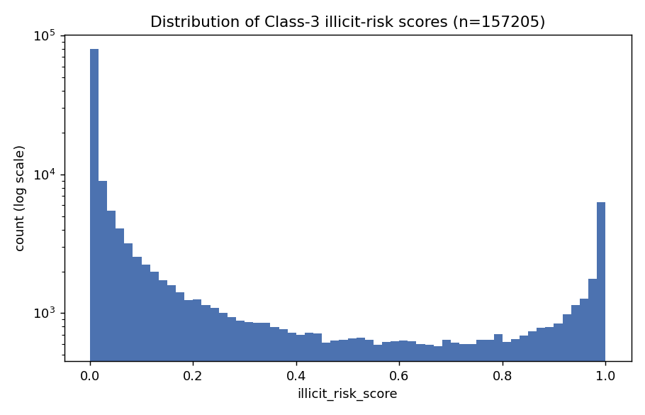
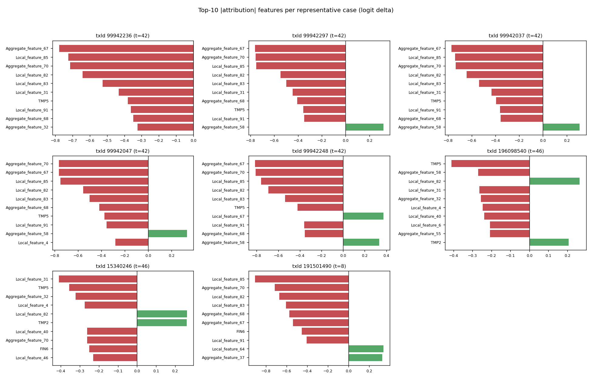
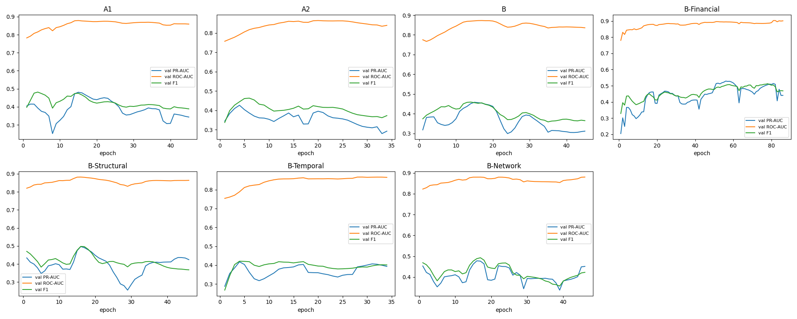

Bitcoin transaction forensics
A graph model ranks 157,205 unknown transactions. Every flag comes with evidence you can check.
What the data looks like
Elliptic++ is a graph of Bitcoin transactions. Only 22.85% of them carry a label, and the illicit ones are 2.23% of all nodes.
- transactions
- 203,769
- directed edges
- 234,355
- time steps
- 49
- unknown class
- 157,205
Illicit 4,545 (2.23%), licit 42,019 (20.62%), unknown 157,205 (77.15%). Unknown is never treated as licit.
- 965 transactions have all 17 augmented features missing, and they have no address records.
- All 234,355 edges join two transactions of the same time step.
- The illicit share among labelled transactions falls from 11.58% in training to 4.61% in test.
Split by time, never at random
A forensic model works on later activity than it learned from. No edge crosses the three periods, so a node never reads a neighbour from another period.
| Period | Time steps | Labelled | Illicit share | Edges inside |
|---|---|---|---|---|
| Training | 1 to 34 | 29,894 | 11.58% | 156,843 |
| Validation | 35 to 41 | 7,829 | 8.62% | 35,360 |
| Test | 42 to 49 | 8,841 | 4.61% | 42,152 |
Edges between different periods: 0.
Could the inherited features know the future?
Random Forest leaned on address-history features, so we checked when that information could have existed. Open each step.
Fourteen features that only use the past
Each is built from history up to the transaction's own time step. Pick a family and watch its features orbit a node.
| Feature | Meaning | Boundary |
|---|
TMP6 is undefined for 84.53% of transactions, so a first-appearance flag keeps that fact. An early version measured address age from one role only and gave 0 where 5 was correct. Fixing it changed 3,174 TMP1 values and 688 TMP2 values.
The scaler that broke training
Validation loss was in the hundreds of thousands. A few features had almost no spread in training, and RobustScaler divides by that spread.
| Seed 42, set B | RobustScaler | Quantile |
|---|---|---|
| Validation PR-AUC | 0.4585 | 0.8923 |
| Threshold resolved | no (0.99) | yes (0.90) |
| Test precision | 0.2252 | 0.6080 |
| Test F1 | 0.2912 | 0.5162 |
| Test PR-AUC | 0.1877 | 0.5063 |
| Loss from top 1% of nodes | 100% | 37.6% |
The raw values were small. At least 75% of training rows shared one value, so the scaler's divisor was almost zero. Over four seeds the mean test PR-AUC went from 0.2212 to 0.5165.
How the graph model reads a transaction
Each GraphSAGE layer averages a transaction's neighbours into its own features. Two layers reach two hops. Click any node in the scene to send a message through it.
- Two SAGEConv layers, 186 inputs, 64 hidden units, 2 output logits
- ReLU and dropout 0.3 between the layers
- Class-weighted loss, weights 0.5655 licit and 4.3174 illicit
- Adam, learning rate 0.01, weight decay 0.0005
- Stop when validation PR-AUC stalls for 30 epochs, at most 200
- Threshold searched on validation only, from 0.10 to 0.99
Everything we tried
Audits, baselines, model runs and fixes, with why we ran each one and what it taught us. Select one to light its bar.
Test-period comparison
Click a column to sort and a row to light its bar. Seeds above 1 show means. Random Forest leads on PR-AUC and F1.
Scoring the unknown class
The frozen model scored all 157,205 unknown transactions. Move the threshold and watch the flagged count.
- flagged
- 12,344
- share of unknown
- 7.85%
- in the 3D sample
- 0
At 0.90 this is a prioritisation list, not an illicit rate. On the labelled test period the same threshold had precision 0.608. 579 scores print as exactly 1.000000, yet the top 20 have logit margins from 14.82 to 21.12, so rank by margin.

Ask about one transaction
These are the 20 highest-scoring unknown transactions, with real values from the project's output files. Pick one.
What this does not show
Limits
- One GraphSAGE configuration and one chronological split.
- Illicit prevalence falls from 11.58% to 4.61% between training and test.
- Random Forest is stronger on precision, F1 and PR-AUC, and it has not been trained on feature set B.
- The meaning of most inherited features is unverified.
- Ablations are associations, because the feature families overlap (TMP1 and TMP7 correlate at 0.999).
- The unknown class has no ground truth.
- Attribution measures model sensitivity, not cause.
- A high score does not establish illicit activity.
What we would do next
- Train Random Forest and gradient boosting on feature set B.
- Evaluate on several time boundaries.
- Report precision among the top k flagged labelled transactions.
- Check how much the 1-input, 1-output, first-appearance rule explains on the test split. In labelled data it covers 3,694 transactions and 2,897 are illicit.
- Run ten seeds and repeat attribution with other baselines.
- Audit the 150 inherited features not examined in depth.
- Compare each transaction with labelled ones from the same time step.
Attribution on the eight representative cases

